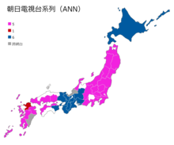

關於全日本新聞網ANN
WIKI ANN
全日本新聞網（日語：オールニッポン・ニュースネットワーク Ōru Nippon Nyūsu Nettowāku ?，英語：All-Nippon News Network，簡稱ANN）是以朝日電視台和朝日放送電視台為核心的電視聯播網，目前共有26個加盟電視台（其中福井放送、宮崎電視台是跨網台）。在大多數的情況下，ANN是「朝日電視網」（英語：TV Asahi Network，日語：テレビ朝日ネットワーク）的同義詞。 除了僅在都會區設台的TXN之外，全日本新聞網是最晚完成覆蓋日本全國體制的聯播網，加盟台中有11個是平成新台。在2003年朝日電視台遷入現址之際，ANN亦更換為現行標誌。
品牌
|
開播日期
|
可收視地區
|
官方網站 |
| ANN第一代標誌（成立日－2003年9月） | ANN第二代標誌（2003年10月－） |  ANN各台遙控器號碼 |
 外部連結圖1
外部連結圖1
|
|
笑 |
| 新聞ニュース | |||
| NHK | アニメ 赤ちゃん本部長 | unco | うんこに疲れた人にうんこ新聞 |
| 毎日新聞 | うんこと税金に共通点? 財務省が「うんこドリル」とコラボ | ||